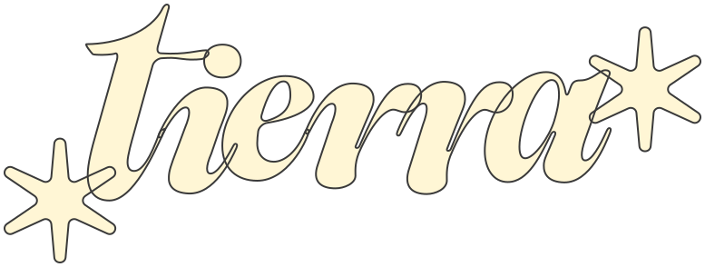
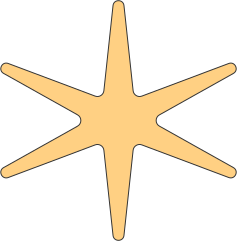
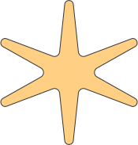

Sobre el evento
Tierra es una experiencia creativa al aire libre donde la cerámica, las manos y el paisaje se encuentran.
Durante los días 14 y 15 de junio, nos alejaremos del ritmo urbano para conectar con lo esencial: el barro, el tiempo lento y el entorno natural que nos rodea. Trabajaremos con la cerámica de manera consciente, combinando técnicas tradicionales con una mirada contemporánea y experimental.
Gracias al espacio natural recolectaremos materiales y nos dejaremos inspirar por la textura de las piedras, el ritmo del viento y los silencios compartidos.
Es un espacio abierto a todos los niveles, donde lo importante no es la técnica perfecta, sino el proceso y la exploración.
Ven a modelar con calma, a crear con intención y a vivir la cerámica desde otro lugar.
¿Te quedan dudas?
Artistas
Clara Hernández
Clara es ceramista y formadora, especializada en técnicas tradicionales y cocción experimental al aire libre. Estudió Cerámica Artística en la Escuela de Arte de Sevilla y ha complementado su formación con residencias y talleres en España y Portugal, explorando la conexión entre la tierra, el fuego y el gesto manual.
Su enfoque combina el respeto por los procesos lentos con la libertad creativa, y en sus talleres apuesta por una cerámica viva, consciente y en diálogo con el entorno. Actualmente compagina su práctica personal con la enseñanza en proyectos de arte y naturaleza.
Marina Plaza
Marina es ceramista autodidacta con formación en arte contemporáneo y educación ambiental. Su trabajo nace del cruce entre la creación artística y el vínculo con el paisaje, inspirada en su estancia en México. Desde hace varios años desarrolla talleres de cerámica en espacios naturales, donde invita a reconectar con los materiales, el cuerpo y el juego.
Apasionada por las técnicas primitivas de cocción y por la cerámica como herramienta pedagógica, Marina ha colaborado con centros culturales, escuelas rurales y proyectos comunitarios, siempre desde una mirada cercana, accesible y sostenible.
Proyectos
El lugar
El evento se realizará en Cazalla de la Sierra, en Sevilla, donde disfrutaremos de nuestro taller y sus alrededores. Nuestro taller estará rodeado de verde, pero a solo unos pasos del pueblo para tener lo necesario a mano.
Cómo llegar
Si vienes desde Sevilla tienes varias opciones:
🚗 En coche
• Desde Sevilla, toma la A-66 dirección Mérida.
• Sal en El Ronquillo y sigue por la A-5301 hacia Cazalla de la Sierra.
🚆 En tren (Cercanías)
• Línea C-1 de Renfe Cercanías.
• Salen desde Sevilla-Santa Justa o San Bernardo y te dejan en la estación Cazalla-Constantina.
Si vienes desde otro sitio o vienes sin coche, avísanos y te echamos un cable para coordinar transporte o compartir trayecto con otras personas del evento 🚐✨
